Help Manual
Installing and Running RGA
The tool is available for download on the RGA GitHub releases page.
Windows: use the .msi installer or .zip archive. For Vulkan®, the installer would also install the RGA Layer and hence is the recommended option.
Linux: use the .tgz archive.
To run the app, run the RadeonGPUAnalyzerGUI executable.
Startup dialog
The graphical user interface has been extended to support more than a single API, so you will now be prompted to select your default API of choice on startup. You can check the “Do not ask me again” check box to always launch the app in the desired mode.
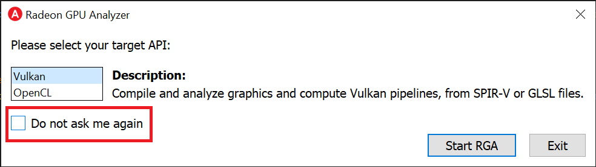Vulkan® Mode
The Home Page
At the top of the home page, you will find two tabs:
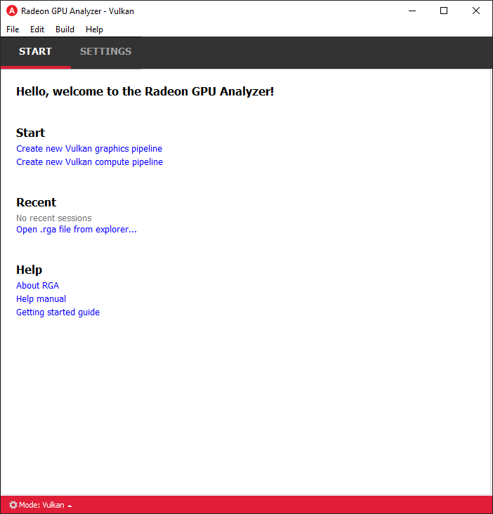Start Tab
From the Start tab, you can create a new project or load an existing project.
Creating an RGA Vulkan® Project
The new RGA Vulkan® mode compiles Vulkan® pipelines, which are comprised of shaders and state. The shaders can come in the form of SPIR-V™ binaries or, alternatively, you can provide RGA GLSL source code, and the tool would pass the shaders through the front-end compiler (glslang) to generate the SPIR-V™ binaries for you.
To handle the state, we defined a JSON representation of the Vulkan® pipeline state:
.gpso file format for VkGraphicsPipelineCreateInfo, for Vulkan® graphics pipeline state
.cpso file format for VkComputePipelineCreateInfo, for Vulkan® compute pipeline state
You can think of those files as a “recipe” for creating the Vulkan® pipeline state in runtime. To compile your pipeline, RGA would spawn a separate process (named VulkanBackend), which would create the Vulkan® instance, configure the pipeline state according to the recipe, and create the VkShaderModule objects from your shaders.
When you create a project within the app, a default .gpso / .cpso file would be generated for you with a default state. The default state is just enough for compiling very basic shaders, however, for most practical use cases, you would have to edit the state to match your shaders (please see the “Pipeline State Editor” section for more details). In the case that the pipeline creation for your shaders fails, the compilation process would fall back to using the offline Vulkan® mode (-s vk-offline-spv). The following warning indicator is displayed in the bottom right corner of the application if this occurs.
The offline mode produces less accurate ISA disassembly and resource usage statistics, and therefore it is highly recommended to adjust the pipeline state to match your shaders so that the compilation can go through the driver and produce the best results.
In the Start tab for Vulkan® mode, you have two options:
Create a graphics pipeline
Create a compute pipeline
Graphics pipeline projects
May contain a shader for every stage of the graphics pipeline: Vertex, Tessellation Control, Tessellation Evaluation, Geometry, and Fragment.
A Vertex shader is required at minimum to successfully build the pipeline.
Within the graphics pipeline project, you would be able to configure the Vulkan® graphics pipeline state in the UI
Compute pipeline projects
May contain a single Compute shader stage.
Within the compute pipeline project, you would be able to configure the Vulkan® compute pipeline state in the UI
You can also create a compute or graphics pipeline through the File menu by:
Clicking on File -> “Create new Vulkan® graphics pipeline” (Ctrl+Alt+G)
Clicking on File -> “Create new Vulkan® compute pipeline” (Ctrl+Alt+C)
You will then be prompted for an optional rename of your pipeline project:
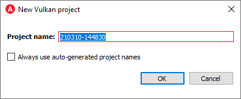RGA will use a yymmdd-hhmmss date-time string as a default name. Check the “Always use auto-generated project names” check box to instruct RGA to always use the default name without prompting for renaming.
Loading a Project
You can load an existing project (.rga file) using the Ctrl+Alt+O shortcut or by clicking on an item on the Recent menu in the home page (note that the project type can be seen in the symbol to the right of the recent project link):
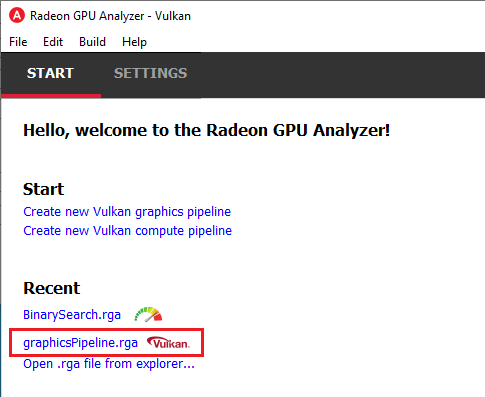It is also possible to load a project from the File -> “Open existing RGA project…” menu item:
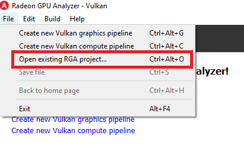Settings Tab
From the Settings tab, you can control the global settings:
Application settings
The Application settings view is used to configure global application settings that aren’t associated with a single API mode:
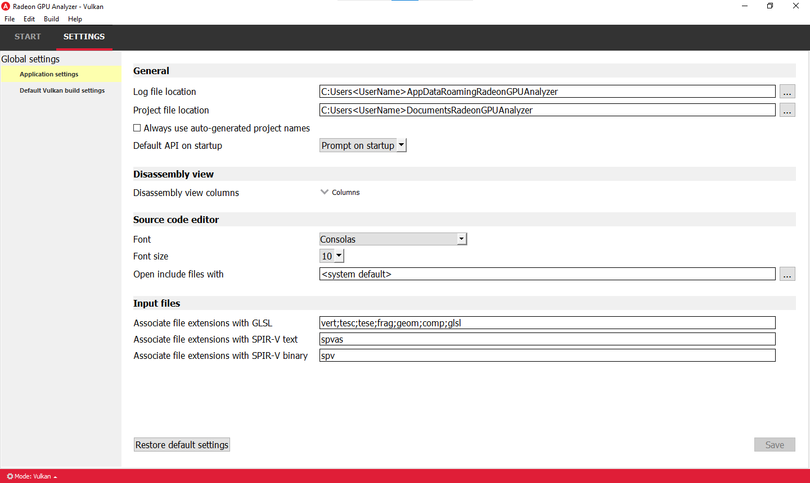General
Log file location: The folder in which RGA would generate log files. Upon startup RGA will clean up the log files that are older than 3 days.
Project file location: The folder in which RGA would generate project files.
Always use auto-generated project names: If checked, RGA will always use the auto-generated project name, without prompting for a rename when creating a new project.
Default API on startup: RGA will always enter the selected API Mode upon startup.
Disassembly View
Disassembly view columns: The set of disassembly view columns which will be visible by default.
Source code editor
Font & Font Size: Configure the default font style and size settings used in the shader source code editor.
Open include files with: Select the default text editor application that’s launched when opening include files.
Input files
Associate file extension association: Choose the set of file extensions used to associate RGA with various shader input source files.
Default Vulkan® Build Settings
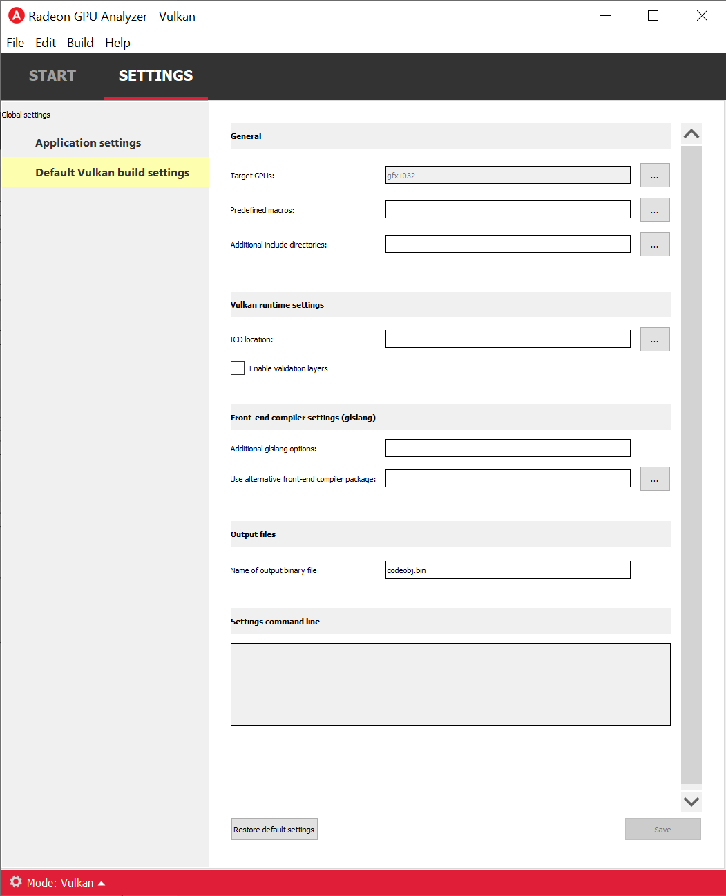General
Target GPUs:
These are the target architectures that the code would be built for. You can click the “…” button near this item to open RGA’s target GPUs dialog. When looking at the target devices, we need to consider 3 terms:
Architecture: the name of the GPU HW architecture, such as Vega.
Compute capability: the name of the architecture variant. From the compiler’s point of view, GPUs with the same compute capability are identical. Therefore, RGA treats all of the product names that share the same compute capability as a single Target GPU.
Product name: this is the public name of the GPU product, such as “Radeon Instinct MI25” or “Radeon RX Vega”.
Predefined macros:
Preprocessor directives which can come in two forms:
X, for example _WIN32 or _DEBUG
X=Y, for example “RT_NUM=3”
You can either enter the values manually with a “;” between each directive, or use the dedicated view (click the “…” button to show it). In case that a directive contains whitespace characters, make sure to wrap the directive with “”.
Additional include directories:
Additional paths which the compiler would use when searching for source files.
You can either enter the values manually with a “;” between each path, or use the dedicated view (click the “…” button to show it). In case that a path contains whitespace characters, make sure to wrap the path with “”.
Vulkan® Options
ICD location:
Full path to a Vulkan® ICD. If given, RGA would load the given ICD explicitly instead of the Vulkan® loader. This setting is useful if you want RGA to use an older or newer AMD Vulkan® driver (amdvlk64.dll/.so) to compile your pipeline. You can just browse for the file here, and RGA would make sure to use that file instead of the system’s default.
Enable validation layers:
Enable Vulkan® validation layers. This feature is useful when the build process fails at or around the pipeline creation stage. If your compilation failed at the front-end stage (GLSL -> SPIR-V™ or SPIR-V™ text to SPIR-V™ binary), then you will probably get a meaningful error message in the build output from the front-end compiler (glslang). However, if the build failure fails deeper in the stack, there will be very limited error messages, since AMD’s shader compiler does not provide error messages. Enabling the validation layers can help shed light on the specific pipeline settings that was not configured properly or did not match your shaders.
Additional glslang options:
Additional options to be passed to glslang for Vulkan® front-end compilation (for example, “–target-env vulkan1.1 –suppress-warnings”). You can pass any options that are accepted by glslang here, and rga would pass those through to glslang when compiling your GLSL code or reassembling your SPIR-V™ binaries.
Use alternative front-end compiler package:
Path to alternative compiler’s binaries folder. The following executables are expected to be in this folder: glslangValidator, spirv-as, spirv-dis. If given, this package would be used instead of the glslang package that is bundled with RGA to compile GLSL to SPIR-V, disassemble SPIR-V™ binaries, reassemble SPIR-V™ binaries, etc.
Name of output binary:
The file name which will be used for the generated pipeline binary ELF file.
Settings command line
The command string which will be passed to the RGA backend when it is invoked. This command string is dynamically populated from the values that you set in the UI.
The Build View
After you add or create a new file, RGA will create a project for you and switch to the Build View. To learn how to create a project, please visit RGA’s Quickstart documentation.
The build view consists of 4 views: - File Menu - Source Code View - Disassembly View - Build Output View
Pipeline State Editor
The pipeline state editor provides a tree representation of the Vulkan® pipeline state, allowing the user to edit a graphics or compute pipeline’s creation parameters. It is important to configure a project’s pipeline state to match the required shader inputs & outputs or the pipeline may fail to compile successfully.
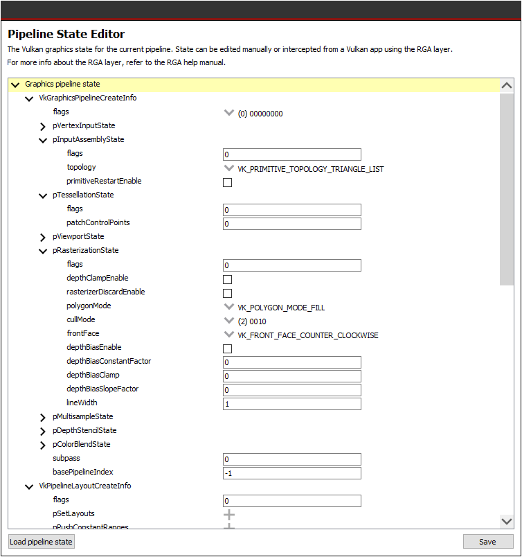The Pipeline State editor can be opened by clicking on the “Pipeline state” button within the file menu, or by using the F9 keyboard shortcut.
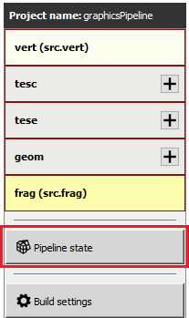Several create info structures are available to be configured within this view depending on the project’s pipeline type:
Graphics pipeline
VkGraphicsPipelineCreateInfo
VkPipelineLayoutCreateInfo
VkDescriptorSetLayoutCreateInfo array
VkRenderPassCreateInfo
Compute pipeline
VkComputePipelineCreateInfo
VkPipelineLayoutCreateInfo
VkDescriptorSetLayoutCreateInfo array
The pipeline state parameters can be searched using structure names or values. You can use the Ctrl+F (Edit -> Find) to open the search widget within the state tree:
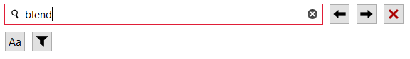If search results are found, the state tree will automatically scroll to the first occurrence. All search results are highlighted in orange, while the currently selected occurrence is highlighted with light gray.
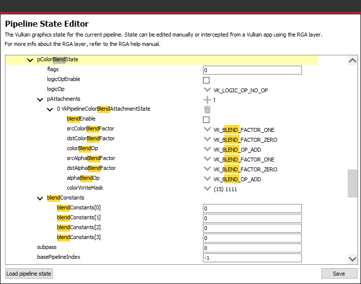Use the “Find Previous” and “Find Next” arrow buttons, or the F3 and Shift+F3 hotkeys, to step through all matches sequentially.
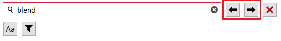It is also possible to use the filter option while searching:
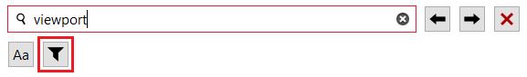Searching with this option on will filter the state tree to display only the relevant sections:
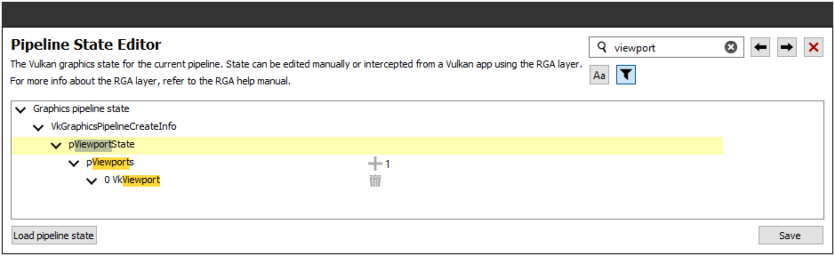The pipeline state can be loaded from an RGA pipeline state file. RGA stores the Vulkan® pipeline state in a JSON file:
.gpso file for graphics pipelines, with a representation of VkGraphicsPipelineCreateInfo
.cpso file for compute pipelines, with a representation of VkComputePipelineCreateInfo
These files can be serialized from your Vulkan® app in runtime using the RGA layer, a beta feature that ships with RGA. For more info about this feature, see the “Use the RGA Layer” section.
Source Code View
The Source Code View shows the source code for the currently selected item in the file menu.
On the left side of the Source Code View, you will find running line numbers.
You can use the Ctrl+F (Edit -> Find) and Ctrl+G (Edit -> Go to…) to search for a string or jump to a specific line.
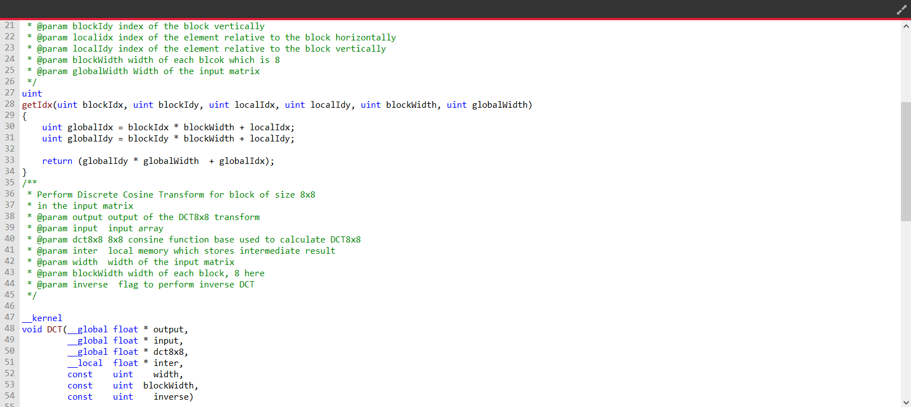After a successful build, when the disassembly view becomes visible alongside the Source Code View, you can double-click on the view’s black title bar to maximize it. You can also click on the resize icon at the top right corner to maximize/minimize the view:
Build Output View
When a build is triggered, the RGA command line app is being launched to execute the build. Its output would be streamed into the Build Output View.
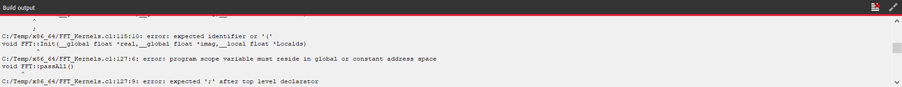Double-clicking on the top black title bar (or clicking on the resize button at its right corner) would maximize/minimize the Build Output View.
The Clear button at the top right corner will clear the text from the view.
Disassembly View
The disassembly for the selected shader stage will be displayed in the disassembly view on the right:
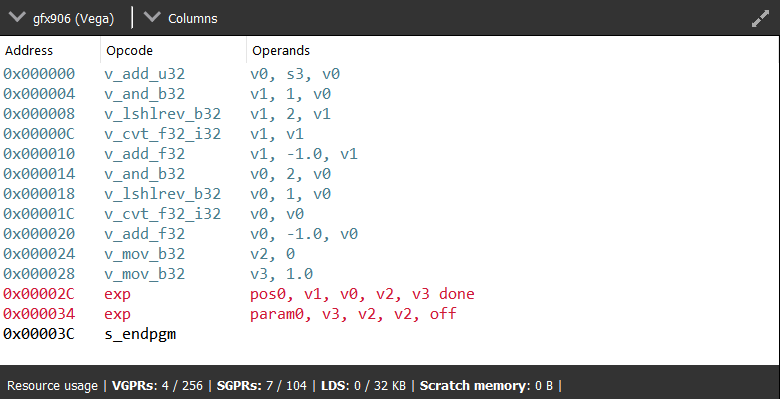Memory instructions are colored in red to help you identify spots with high memory pressure
The Columns drop-down menu at the top can be used to customize the presented columns
If more than one GPU was targeted, use the drop-down on the top left corner to switch devices
The resource usage section under the disassembly table shows the GPU resources that are consumed by the ISA. The information found in the view is displayed as follows:
VGPR consumption: <used>/<available>
SGPR consumption: <used>/<available>
VGPR spills (if occurred, otherwise - not shown)
SGPR spills (if occurred, otherwise - not shown)
LDS consumption: <used>/<available>
Scratch memory usage
Instruction cache usage
In cases where performance hazards are detected due to the usage of a GPU resource, RGA will display a warning icon and highlight the relevant resources in yellow:
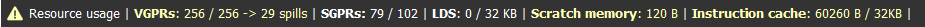Resource hazards that may require the developer’s attention are defined as:
VGPR/SGPR hazard: there were register spills, or, <used> == <available>.
LDS hazard: <used> == <available> in LDS.
Scratch memory hazard: scratch memory is used.
Instruction cache hazard: code size is larger than the instruction cache.
VGPR Pressure Visualization
After successfully building your code, you will notice a new column in the disassembly view named “VGPR pressure”. This column is shown by default and can be hidden using the “Columns” dropdown. Below is a screenshot showing this column.
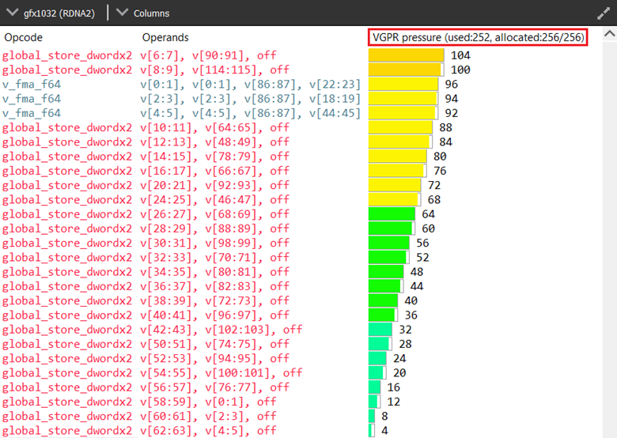The column header text format is “VGPR pressure (used x; allocated: y/256)”, which provides a summary for the entire shader, where ‘x’ gives the total VGPRs used by the current shader and ‘y’ gives the total number of VGPRs allocated. Hovering over any of the column’s cells, will show a tooltip with a summary of the live VGPR at that specific instruction, with a hint about how many VGPRs need to be reduced to save a VGPR block at that instruction. Note that VGPRs are allocated in blocks, which vary in size. The VGPR block size is determined by the target GPU and, in certain cases, by specific characteristics of the shader, such as the wave size it was compiled for. The hint indicates how many VGPRs need to be freed to free up an entire block of VGPRs at that point of the shader:
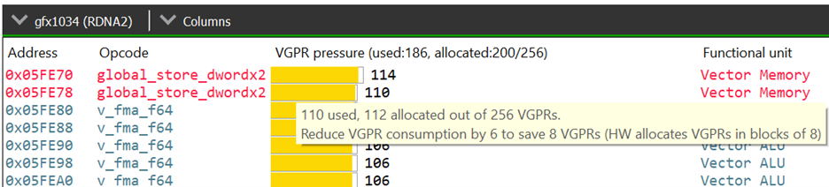Note that, when generating the hint, the tool will take into account the target GPU and the relevant shader characteristics for determining the VGPR allocation block size for you. When examining the VGPR pressure column cells, in addition to the numerical value, which gives the number of live VGPRs at that instruction, you would notice a utilization bar that visualizes the VGPR usage and the VGPR block utilization. The emptier the utilization bar is, the less of the allocated VGPR block is being utilized, which means that less VGPRs would need to be reduced to free up that block:
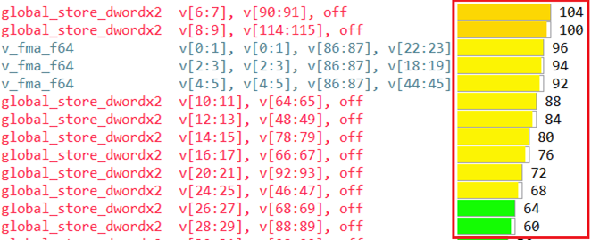In the above screenshot, we have a shader with a VGPR allocation block size of 8 VGPRs. You can see that different lines have different colors in their visualization bar. The bar’s color would be greener as the live VGPR value at that instruction gets closer to 0 and redder as the value gets closer to 256. The lines where the visualization bar is full (where the VGPR usage value is a multiple of 8, like 104, 96, 88 etc.) show points in the shader where the VGPR allocation block is fully utilized. However, in lines where the bar is partially empty, not all allocated VGPRs are being used. The tooltip hint that we mentioned earlier will let you know how many VGPRs need to be reduced to free up that VGPR allocation block.
If the register pressure details of any instruction could not be generated, there will be a red hazard symbol as shown in the image below. The instructions that could not be parsed will have “N/A” in the VGPR pressure column. Hovering over the hazard symbol provides the count of instructions that could not be parsed in the form of a tooltip.
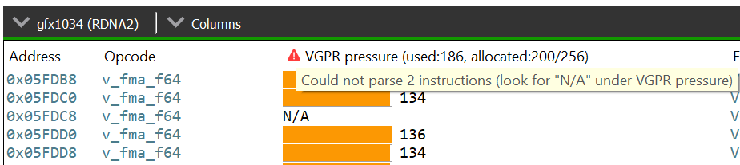In case the number of VGPRs used hits the max on any instruction, there will be a yellow hazard symbol as shown in the image below.
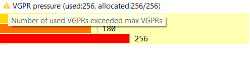As mentioned earlier, a visualization bar’s color would be greener as the live VGPR value at that instruction gets closer to 0 and redder as the value gets closer to 256. To calculate the color for each instruction’s visualization bar, we break down the 0-256 VGPR range into 8 ranges, each of which covers 32 VGPRs (0-32, 32-64 etc.). Each range is assigned a unique color starting with light green for the first range to dark red for the last range. Below is a screenshot showing various color ranges:
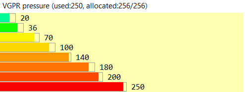OpenCL™ Offline Mode
The Home Page
At the top of the home page, you will find two tabs:
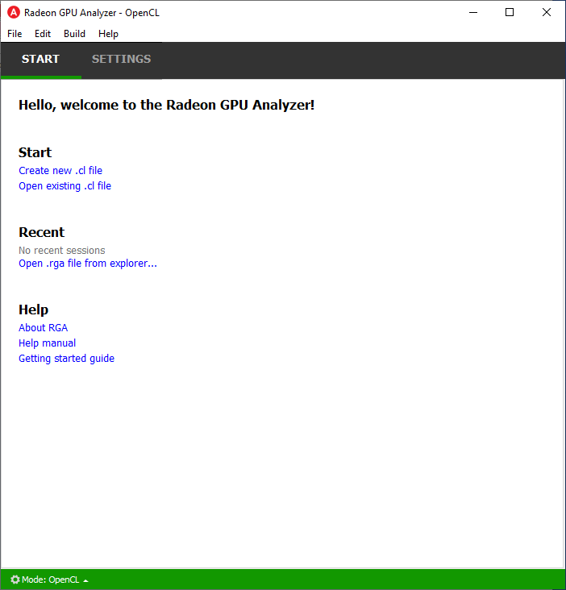Start Tab
From the Start tab, you can create a new project or load an existing project.
Creating a Project
RGA Project is a vehicle that can contain any number of OpenCL™ source files (.cl), together with a set of build settings. When you build the project, the OpenCL™ source files are being compiled and linked together into a single HSA Code Object binary.
RGA will automatically create for you the project when you add or create a file in the Home Page.
To add an existing .cl source file, use Ctrl+O or click on “Open existing .cl file” under the Start section:
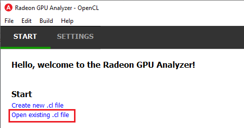You can also do this by clicking on File -> “Open existing .cl file”:
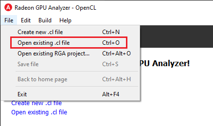In a similar way, you can create a project by creating an empty .cl file. Use the Ctrl+N shortcut or click on “Create new .cl file”.
You will then be prompted for an optional rename of your project:
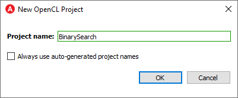RGA will use a yymmdd-hhmmss date-time string as a default name. Check the “Always use auto-generated project names” check box to instruct RGA to always use the default name without prompting for renaming.
Loading a Project
You can load an existing project (.rga file) using the Ctrl+Alt+O shortcut or by clicking on an item on the Recent menu in the home page:
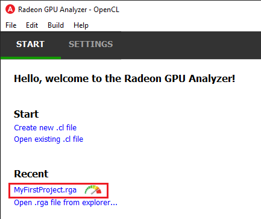It is also possible to load a project from the File -> “Open existing RGA project…” menu item:
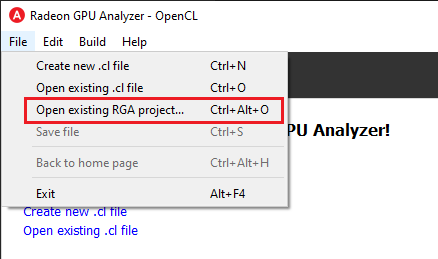Settings Tab
From the Settings tab, you can control the global settings:
Application settings
The Application settings view is used to configure global application settings that aren’t associated with a single API mode:
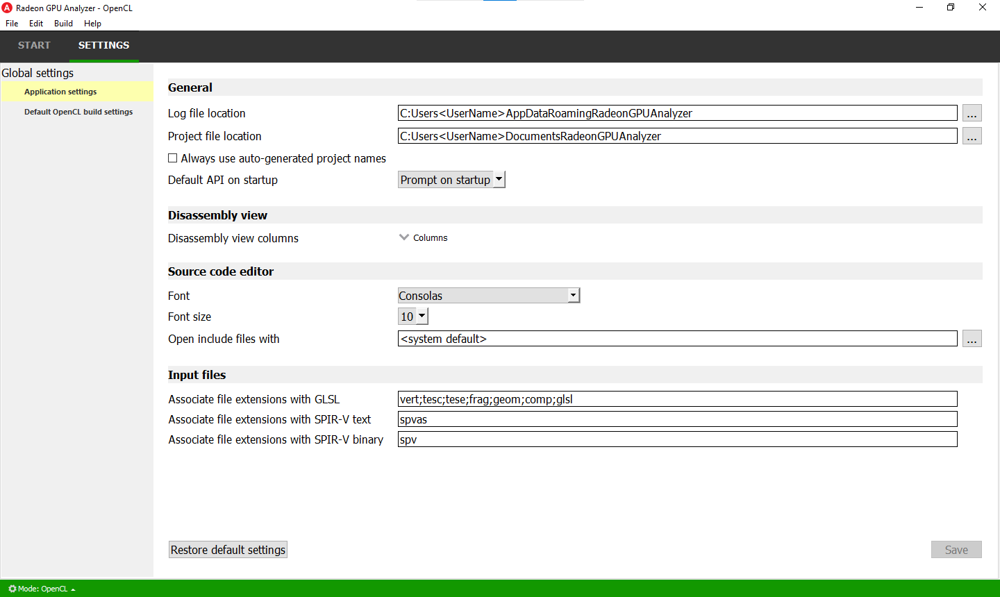General
Log file location: The folder in which RGA would generate log files. Upon startup RGA will clean up the log files that are older than 3 days.
Project file location: The folder in which RGA would generate project files.
Always use auto-generated project names: If checked, RGA will always use the auto-generated project name, without prompting for a rename when creating a new project.
Default API on startup: RGA will always enter the selected API Mode upon startup.
Disassembly View
Disassembly view columns: The set of disassembly view columns which will be visible by default.
Source code editor
Font & Font Size: Configure the default font style and size settings used in the shader source code editor.
Open include files with: Select the default text editor application that’s launched when opening include files.
Input files
Associate file extension association: Choose the set of file extensions used to associate RGA with various shader input source files.
Default OpenCL™ Build Settings
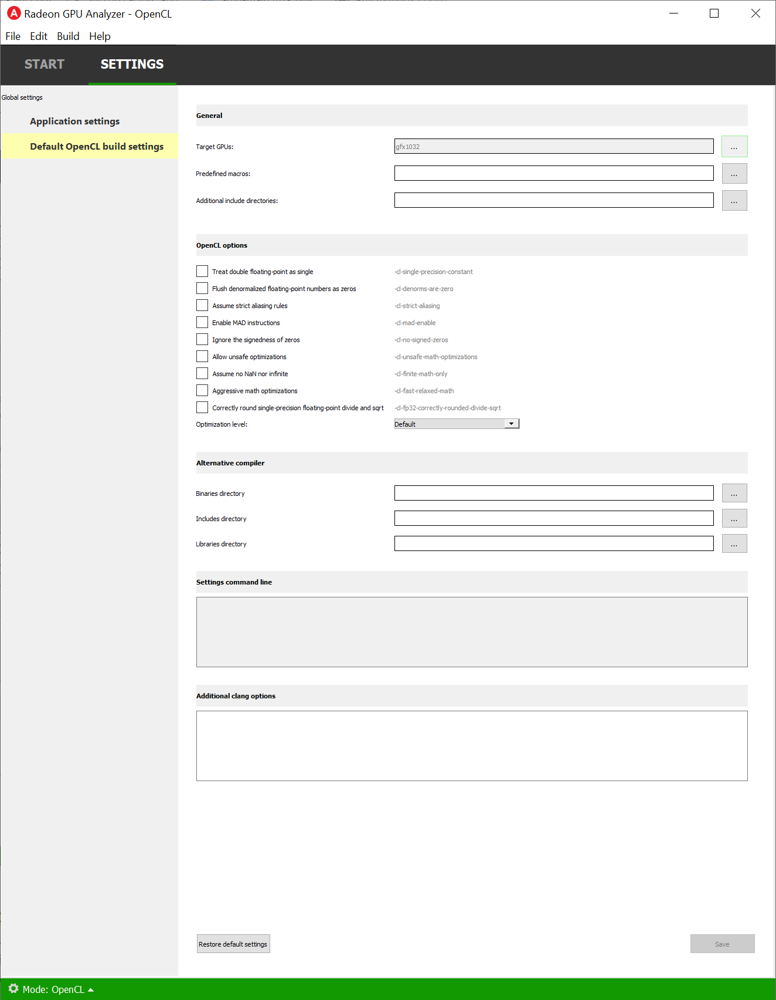This section allows you to configure the default build settings that RGA would use. Any subsequent project that you create would be configured to use that set of default OpenCL™ build settings. You can then change the project-specific project settings. For example, if you would always like your projects to have MAD instructions enabled, check the “Enable MAD instructions” checkbox in the global OpenCL™ build settings. Any project that you create from that point would have MAD instructions enabled.
General
Target GPUs:
These are the target architectures that the code would be built for. You can click the “…” button near this item to open RGA’s target GPUs dialog. When looking at the target devices, we need to consider 3 terms:
Architecture: the name of the GPU HW architecture, such as Vega.
Compute capability: the name of the architecture variant. From the compiler’s point of view, GPUs with the same compute capability are identical. Therefore, RGA treats all of the product names that share the same compute capability as a single Target GPU.
Product name: this is the public name of the GPU product, such as “Radeon Instinct MI25” or “Radeon RX Vega”.
Predefined macros:
Preprocessor directives which can come in two forms:
X, for example _WIN32 or _DEBUG
X=Y, for example “RT_NUM=3”
You can either enter the values manually with a “;” between each directive, or use the dedicated view (click the “…” button to show it). In case that a directive contains whitespace characters, make sure to wrap the directive with “”.
Additional include directories:
Additional paths which the compiler would use when searching for source files.
You can either enter the values manually with a “;” between each path, or use the dedicated view (click the “…” button to show it). In case that a path contains whitespace characters, make sure to wrap the path with “”.
OpenCL™ Options
This section includes a set of OpenCL™ options that can be passed to the compiler.
Treat double floating-point as single (-cl-single-precision-constant):
Treat double precision floating-point constant as single precision constant.
Flush denormalized floating-point numbers as zeros (-cl-denorms-are-zero):
This option controls how single precision and double precision denormalized numbers are handled. If specified as a build option, the single precision denormalized numbers may be flushed to zero and if the optional extension for double precision is supported, double precision denormalized numbers may also be flushed to zero. This is intended to be a performance hint and the OpenCL™ compiler can choose not to flush denorms to zero if the device supports single precision (or double precision) denormalized numbers. This option is ignored for single precision numbers if the device does not support single precision denormalized numbers i.e. CL_FP_DENORM bit is not set in CL_DEVICE_SINGLE_FP_CONFIG. This option is ignored for double precision numbers if the device does not support double precision or if it does support double precision but not double precision denormalized numbers i.e. CL_FP_DENORM bit is not set in CL_DEVICE_DOUBLE_FP_CONFIG. This flag only applies for scalar and vector single precision floating-point variables and computations on these floating-point variables inside a program. It does not apply to reading from or writing to image objects.
Correctly round single-precision floating-point divide and sqrt (-cl-fp32-correctly-rounded-divide-sqrt):
Specifies that single precision floating-point divide (x/y and 1/x) and sqrt used in the program source are correctly rounded. If this option is not specified, the minimum numerical accuracy of single precision floating-point divide and sqrt are as defined in section 7.4 of the OpenCL™ specification. This build option can only be specified if the CL_FP_CORRECTLY_ROUNDED_DIVIDE_SQRT is set in CL_DEVICE_SINGLE_FP_CONFIG (as defined in in the table of allowed values for param_name for clGetDeviceInfo) for devices that the program is being build. clBuildProgram or clCompileProgram will fail to compile the program for a device if the -cl-fp32-correctly-rounded-divide-sqrt option is specified and CL_FP_CORRECTLY_ROUNDED_DIVIDE_SQRT is not set for the device.
Assume strict aliasing rules (-cl-strict-aliasing):
Allow the compiler to assume the most strict aliasing rules. This option is deprecated and added for compatibility with OpenCL™ 1.0.
Enable MAD instructions (-cl-mad-enable):
Allow a * b + c to be replaced by a mad. The mad computes a * b + c with reduced accuracy. For example, some OpenCL™ devices implement mad as truncate the result of a * b before adding it to c.
Ignore the signedness of zeros (-cl-no-signed-zeros):
Allow optimizations for floating-point arithmetic that ignore the signedness of zero. IEEE 754 arithmetic specifies the behavior of distinct +0.0 and -0.0 values, which then prohibits simplification of expressions such as x+0.0 or 0.0*x (even with -clfinite-math only). This option implies that the sign of a zero result isn’t significant.
Allow unsafe optimizations (-cl-unsafe-math-optimizations):
Allow optimizations for floating-point arithmetic that (a) assume that arguments and results are valid, (b) may violate IEEE 754 standard and (c) may violate the OpenCL™ numerical compliance requirements as defined in section 7.4 for single-precision and double-precision floating-point, and edge case behavior in section 7.5. This option includes the -cl-no-signed-zeros and -cl-mad-enable options.
Assume no NaN nor infinite (-cl-finite-math-only):
Allow optimizations for floating-point arithmetic that assume that arguments and results are not NaNs or +/- infinity. This option may violate the OpenCL™ numerical compliance requirements defined in in section 7.4 for single-precision floating-point, section 9.3.9 for double-precision floating-point, and edge case behavior in section 7.5.
Aggressive math optimizations (-cl-fast-relaxed-math):
Sets the optimization options -cl-finite-math-only and -cl-unsafe-math-optimizations. This allows optimizations for floating-point arithmetic that may violate the IEEE 754 standard and the OpenCL™ numerical compliance requirements defined in the specification in section 7.4 for single-precision and double-precision floating-point, and edge case behavior in section 7.5. This option causes the preprocessor macro __FAST_RELAXED_MATH__ to be defined in the OpenCL™ program.
Correctly round single-precision floating-point divide and sqrt (-cl-fp32-correctly-rounded-divide-sqrt):
Specifies that single precision floating-point divide (x/y and 1/x) and sqrt used in the program source are correctly rounded. If this option is not specified, the minimum numerical accuracy of single precision floating-point divide and sqrt are as defined in section 7.4 of the OpenCL™ specification. This build option can only be specified if the CL_FP_CORRECTLY_ROUNDED_DIVIDE_SQRT is set in CL_DEVICE_SINGLE_FP_CONFIG (as defined in in the table of allowed values for param_name for clGetDeviceInfo) for devices that the program is being build. clBuildProgram or clCompileProgram will fail to compile the program for a device if the -cl-fp32-correctly-rounded-divide-sqrt option is specified and CL_FP_CORRECTLY_ROUNDED_DIVIDE_SQRT is not set for the device.
Optimization level:
Sets the OpenCL™ compiler’s optimization level:
Default: the compiler default optimization level
–O0: disable optimization
–O1: enable minimal optimization
–O2: optimize for speed
–O3: apply full optimization
Alternative compiler
By default, RGA will use the compiler that is bundled with the package. To use an alternative compiler, provide the following paths:
Binaries folder:
Path to alternative compiler’s binaries folder. The following executables are expected to be in this folder: clang, lld, llvm-objdump, llvm-readobj.
- Includes folder:
Path to alternative compiler’s headers folder. The specified folder is expected to contain opencl-c.h header file.
- Libraries folder:
Path to alternative compiler’s OpenCL™ device libraries folder. The following bitcode files are expected to be in the specified folder: irif.amdgcn.bc, ockl.amdgcn.bc, oclc_correctly_rounded_sqrt_off.amdgcn.bc, oclc_correctly_rounded_sqrt_on.amdgcn.bc, oclc_daz_opt_off.amdgcn.bc, oclc_daz_opt_on.amdgcn.bc, oclc_finite_only_off.amdgcn.bc, oclc_finite_only_on.amdgcn.bc, oclc_isa_version_900.amdgcn.bc, oclc_isa_version_901.amdgcn.bc, oclc_isa_version_902.amdgcn.bc, oclc_unsafe_math_off.amdgcn.bc, oclc_unsafe_math_on.amdgcn.bc, ocml.amdgcn.bc, opencl.amdgcn.bc
Settings command line
The command string which will be passed to the RGA backend when it is invoked. This command string is dynamically populated from the values that you set in the UI.
Additional clang options
Additional options for the clang compiler. For example, use -Weverything to enable all diagnostics.
The Build View
After you add or create a new file, RGA will create a project for you and switch to the Build View. To learn how to create a project, please visit RGA’s Quickstart documentation.
The build view consists of 4 views: - File Menu - Source Code View - Disassembly View - Build Output View
File Menu
Using the File Menu you can:
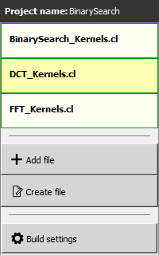
Add an existing source file to your project by clicking on “Add file”, or using the Ctrl+O shortcut
Create a new source file by clicking on “Create file”, or using the Ctrl+N shortcut
Open the project-specific build settings by clicking on “Build settings”, or using the F8 shortcut. For more details about the build settings view, please see the Build Settings section.
When you have more than a single file item in the menu, clicking on a file item will switch focus to that file, and display the file’s contents in the Source View and Disassembly View (if any content is available for that file). The current item is highlighted in yellow.
The user can remove an existing file within the project by hovering on the item and clicking on the remove button.
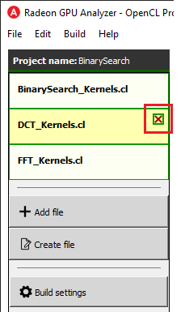Source Code View
The Source Code View shows the source code for the currently selected item in the file menu.
On the left side of the Source Code View, you will find running line numbers.
You can use the Ctrl+F (Edit -> Find) and Ctrl+G (Edit -> Go to…) to search for a string or jump to a specific line.
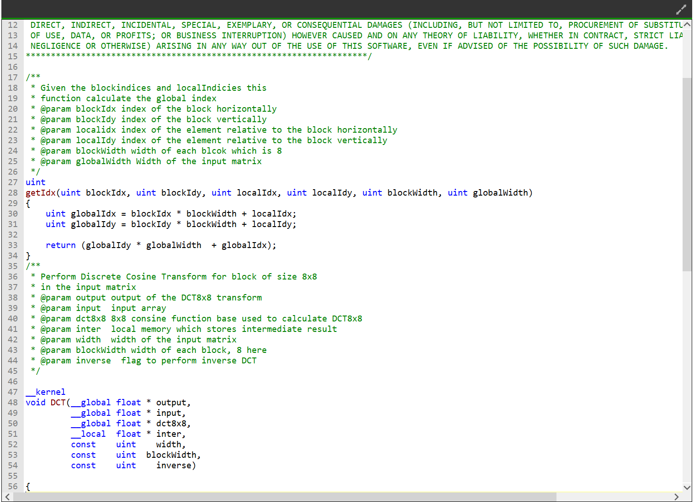After a successful build, when the disassembly view becomes visible alongside the Source Code View, you can double-click on the view’s black title bar to maximize it. You can also click on the resize icon at the top right corner to maximize/minimize the view:
Build Output View
When a build is triggered, the RGA command line app is being launched to execute the build. Its output would be streamed into the Build Output View.
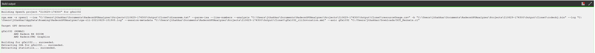Double-clicking on the top black title bar (or clicking on the resize button at its right corner) would maximize/minimize the Build Output View.
The Clear button at the top right corner will clear the text from the view.
Disassembly View
The disassembly for the relevant kernel will be displayed in the disassembly view on the right:
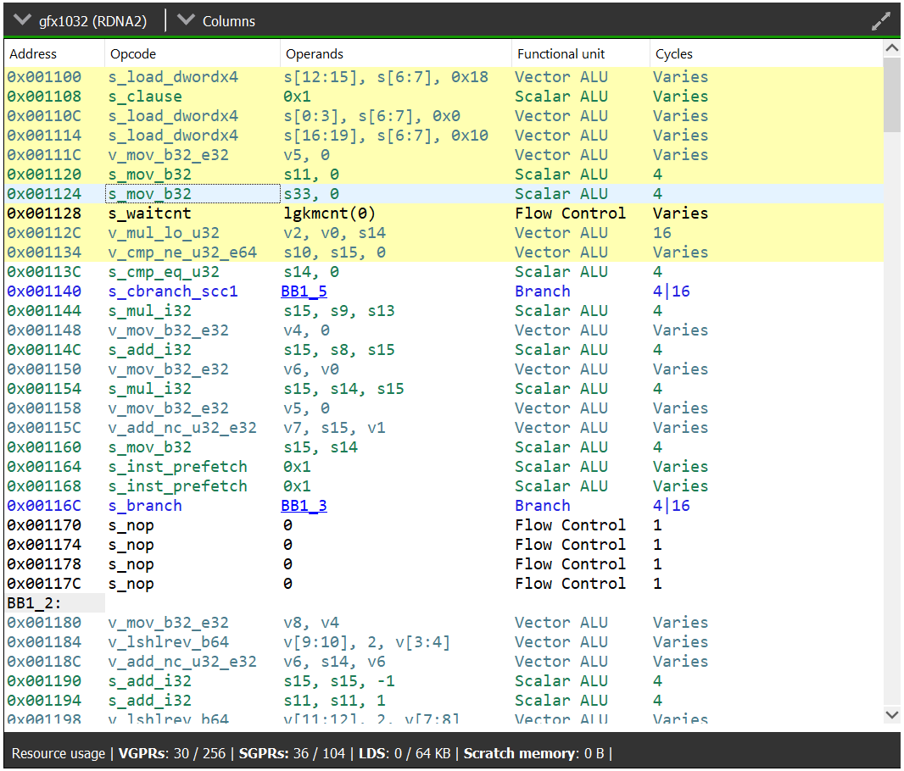Highlighted rows are correlated to the current line in the source code view on the left
Memory instructions are colored in red to help you identify spots with high memory pressure
The Columns drop-down menu at the top can be used to customize the presented columns
If more than one GPU was targeted, use the drop-down on the top left corner to switch devices
The resource usage line shows the GPU resources that are consumed by the presented code
The resource usage section under the disassembly table shows the GPU resources that are consumed by the ISA. The information found in the view is displayed as follows:
VGPR consumption: <used>/<available>
SGPR consumption: <used>/<available>
VGPR spills (if occurred, otherwise - not shown)
SGPR spills (if occurred, otherwise - not shown)
LDS consumption: <used>/<available>
Scratch memory usage
Instruction cache usage
In cases where performance hazards are detected due to the usage of a GPU resource, RGA will display a warning icon and highlight the relevant resources in yellow:
Resource hazards that may require the developer’s attention are defined as:
VGPR/SGPR hazard: there were register spills, or, <used> == <available>.
LDS hazard: <used> == <available> in LDS.
Scratch memory hazard: scratch memory is used.
Instruction cache hazard: code size is larger than the instruction cache.
How To…
See App Version Info & Check for Updates
Use the Ctrl+F1 shortcut or click on the Help -> About menu item. This will display the About dialog.
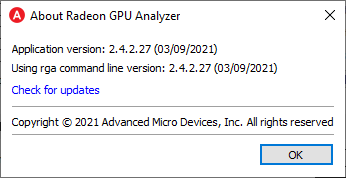In addition to the version number and build date of the RGA app, the About dialog displays the version and build date of the RGA command line executable which resides at the GUI app’s folder. This allows you to see the details of the RGA command line executable that is being used by the GUI app. In the future, you may want to replace the command line executable before running the GUI application in a plug-and-play fashion (this is allowed as long as your RGA command line executable is of version 2.0. or above).
To update RGA, click on “Check for updates” button and follow the instructions to get the latest update.
Switch the API Mode
The API mode switch is used to toggle the GUI between operating in OpenCL™ and Vulkan® mode. The current mode is displayed within the RGA title bar and is also indicated by the color scheme of the application views and status bar (Green = OpenCL™ mode & Red = Vulkan® mode).
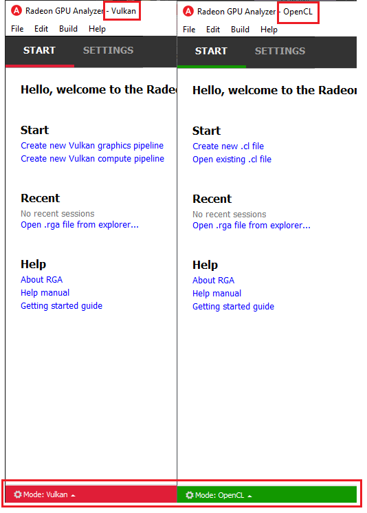The selected API mode will be automatically switched to the required mode when loading an existing RGA project file. The API mode can also be toggled manually from within the GUI in the following locations:
The Mode Switch control in the bottom left of the main window when no project is loaded.

Within the application’s Settings Tab view under the General section.
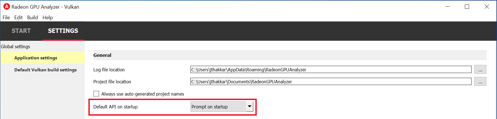
Find Project Files and Output Folder
The RGA project (.rga) files and the build artifacts are generated in a folder named “RadeonGPUAnalyzer” under the Operating System’s native Documents folder for the current user.
Build the Project
To build an already loaded project, select Build->Build project from the file menu. Alternatively, the keyboard shortcut Ctrl+Shift+B can also be used.
Load existing Project
There are five possible ways to load an existing project:
From Start tab, locate your project under “Recent” list and click on it.
From Start tab, under Recent section, click on “Open .rga file from explorer…” and select a project file.
Use the keyboard shortcut Ctrl+Alt+O.
Select File->Open existing RGA project.
Drag and drop an existing RGA project file (.rga) onto the RGA window on start page.
Change Project’s Build Settings
Open the project-specific build settings by clicking on “Build settings”, or using the F8 shortcut. For more details about the build settings options, please see the “Default OpenCL™ Build Settings” section.
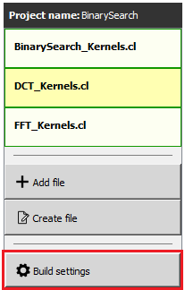Rename a Project
Double click on the project name at the top of the file menu (the left panel).
Vulkan® Mode
Edit Pipeline State
Clicking on “Pipeline state” button brings up the pipeline state editor.
Enable Validation Layers
Clicking on “Build settings” button brings up the build settings. Then checking “Enable validation layers” enables the validation layers.
Use an alternative front-end compiler
Clicking on “Build settings” button brings up the build settings. The location of the alternative front-end compiler can then be added in the text box, or be searched in the file system using the browse button next to the text box.
Use the RGA Layer (Beta Feature)
The RGA Vulkan® layer, or, in its full name, “VK_LAYER_RGA_pipeline_extraction”, is an implicit Vulkan® layer. This means that you can enable it without having to change your Vulkan® application’s source code. To use the RGA layer, follow these steps:
Installation
To install the RGA Vulkan® layer on your machine:
Windows: Download and run the RGA .msi installer and follow the steps - this will install the entire RGA package on your machine: GUI application, command line tool and the RGA layer.
Linux: Download and extract the .tgz archive (tar -zxvf <archive name>). To install the layer, cd to the layer sub-folder and run the rga_layer_install script.
Using the layer
Set the following environment variables:
RGA_LAYER_OUTPUT_PATH
This environment variable defines the output folder where the RGA layer would dump its output files (make sure that the folder exists). Example (Windows): SET RGA_LAYER_OUTPUT_PATH=C:\RGALayerOutput\bloom
RGA_LAYER_SPECIFIC_PIPELINE (optional)
This environment variable provides a semicolon-separated list of strings representing the names of the pipelines that should be serialized (names can be set using the Vulkan® VK_EXT_debug_marker extension). If this environment variable is defined, the layer will only serialize pipelines whose name is included in the list, skipping any pipeline whose name is not in the list. Example (Windows): SET RGA_LAYER_SPECIFIC_PIPELINE=blurVert;blurHorz
In this case, the layer would only serialize pipelines that are named either “blurVert” or “blurHorz”. All other pipelines would be ignored.
ENABLE_RGA_PIPELINE_EXTRACTION_LAYER=1
This environment variable, when set to 1, activates the RGA layer. If this environment variable is not defined or its value is not 1, the RGA layer is ignored by the Vulkan® loader.
Run your Vulkan® application with the above environment variables set. After you close your application, the layer will generate the output files in RGA_LAYER_OUTPUT_PATH. The output files will have the following naming convention:
.gpso files: JSON file that contains the pipeline state for a Vulkan® graphics pipeline
.cpso files: JSON file that contains the pipeline state for a Vulkan® compute pipeline
.spv files: SPIR-V™ binary that was linked to the pipeline
The intercepted pipelines are enumerated from 1 to N by the order that they were written to the disk. The SPIR-V™ files and the pipeline state of each pipeline share the same prefix:
Now you have all you need in order to load your Vulkan® application’s pipelines in RGA and analyze them to see what really happens on AMD GPUs when they run.
Troubleshooting the RGA Layer
The RGA Layer supports the following optional environment variables to assist debugging and troubleshooting:
RGA_LAYER_LOG_ENABLE=1
When this environment variable is set to 1, the RGA Layer will write a log file to RGA_LAYER_OUTPUT_PATH.
If you could not get the RGA layer to generate any output file on your machine, go through the following check-list:
RGA_LAYER_OUTPUT_PATH is defined, and the folder exists and is valid.
RGA_LAYER_LOG_ENABLE is defined and is set to 1.
Windows: Open regedit and make sure that the full path to RGA’s manifest file is listed under ComputerHKEY_LOCAL_MACHINESOFTWAREKhronosVulkanImplicitLayers. Also, make sure that the path contains both the layer’s manifest (JSON) as well as the layer’s .dll.
Linux: Ensure sure that the layer’s manifest (JSON) file and .so file are found in /usr/share/vulkan/implicit_layer.d. If this is not the case, run the rga_layer_install script.
Using the RGA Layer Launcher (Windows Only)
The RGA Layer Launcher is a Windows-only application that can be used to simplify enabling the RGA when launching a Vulkan® application.
Launch the RGA Layer Launcher app, and provide the target Vulkan® application’s details.
Configure the layer settings:
Output directory is where the layer would write its output files
Pipeline names [optional]: provide a semicolon-separated list of strings representing the names of the pipelines that should be serialized (names can be set using the Vulkan® VK_EXT_debug_marker extension). If this environment variable is defined, the layer would only serialize the pipelines whose name is included in the list, skipping any pipeline whose name is not on the list.
Example #1: blurVert;blurHorz (would only intercept pipelines if they’re named blurVert or blurHorz, and would ignore all other pipelines)
Example #2: blurVert (would only intercept pipelines if they’re named blurVert, and would ignore all other pipelines)
OpenCL™ Offline Mode
Find Code Object Binary and Build Artifacts
Right click on the disassembly view and click on “Show disassembly file in explorer”.
Use an Alternative Compiler
By default, RGA will use the compiler that is bundled with the package. You can use an alternative LLVM-based OpenCL™ compiler which supports the AMDGPU target by providing the following paths in the build settings:
- Binaries folder:
Path to alternative compiler’s binaries folder. The following executables are expected to be in this folder: clang, lld, llvm-objdump, llvm-readobj.
- Includes folder:
Path to alternative compiler’s headers folder. The specified folder is expected to contain opencl-c.h header file.
- Libraries folder:
Path to alternative compiler’s OpenCL™ device libraries folder. The following bitcode files are expected to be in the specified folder: irif.amdgcn.bc, ockl.amdgcn.bc, oclc_correctly_rounded_sqrt_off.amdgcn.bc, oclc_correctly_rounded_sqrt_on.amdgcn.bc, oclc_daz_opt_off.amdgcn.bc, oclc_daz_opt_on.amdgcn.bc, oclc_finite_only_off.amdgcn.bc, oclc_finite_only_on.amdgcn.bc, oclc_isa_version_900.amdgcn.bc, oclc_isa_version_901.amdgcn.bc, oclc_isa_version_902.amdgcn.bc, oclc_unsafe_math_off.amdgcn.bc, oclc_unsafe_math_on.amdgcn.bc, ocml.amdgcn.bc, opencl.amdgcn.bc
Keyboard Shortcuts
RGA provides several keyboard shortcuts to facilitate mouse-free usage.
Action |
Shortcut |
|---|---|
General |
|
Exit RGA |
Alt+F4 |
About |
Ctrl+F1 |
Back to home page |
Ctrl+Alt+H |
Open existing RGA project |
Ctrl+Alt+O |
Help manual |
F1 |
Find Next & Find Previous |
F3 & Shift+F3 |
Build settings |
F8 |
Pipeline state |
F9 |
Navigate between home page tabs |
Ctrl+Tab & Ctrl+Shift+Tab |
Navigate Settings tab views |
Ctrl+up/down arrow |
Build view |
|
Find |
Ctrl+F |
Go to (source line) |
Ctrl+G |
Maximize/minimize views in build view |
Ctrl+R |
Save file |
Ctrl+S |
Build project |
Ctrl+Shift+B |
Cancel build |
Ctrl+Shift+X |
Cycle thru various views in build view |
Ctrl+Tab & Ctrl+Shift+Tab |
Cycle thru various widgets in build view |
Tab & Shift+Tab |
Settings view |
|
Restore default settings |
Ctrl+R |
Vulkan® mode |
|
Create new Vulkan® compute pipeline |
Ctrl+Alt+C |
Create new Vulkan® graphics pipeline |
Ctrl+Alt+G |
OpenCL™ mode |
|
Create new .cl file |
Ctrl+N |
Open existing .cl file |
Ctrl+O |